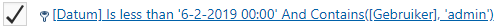
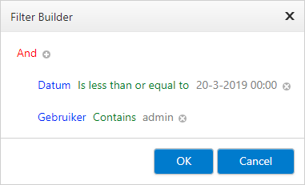

Go, via the menu, to Settings > Audit Log.
Group by dragging one or more column headers above the grid. You can also move them back to the grid.
Sort (ascending/descending) by clicking in the column header once.
Select for more information per shown result.
Select
 to hide this information again.
to hide this information again.Filter within a column with a search query. Select
 for all search options.
for all search options.
Edit combined filters by opening the Filter Builder. Click on the link in the bottom left.

Compose complex filters in the Filter Builder. You can edit all parts. For example, select 'Datum' or 'Gebruiker' to adjust the column which is filtered.

Delete all filters by clicking on Clear (bottom right).
There you can also adjust the number of shown results per page.